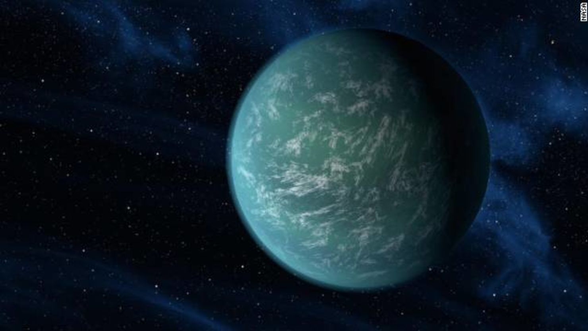

Kepler-22b

Curiosidades
- Kepler-22b es el primer exoplaneta descubierto en la zona habitable de su estrella.
- Se encuentra a aproximadamente 600 años luz de la Tierra, en la constelación de Cygnus.
- Su tamaño es aproximadamente 2.4 veces el de la Tierra, lo que lo clasifica como un "super-Tierra".
- Orbita una estrella similar a nuestro Sol, llamada Kepler-22, cada 290 días.
- Las condiciones en su superficie podrían permitir la existencia de agua líquida.